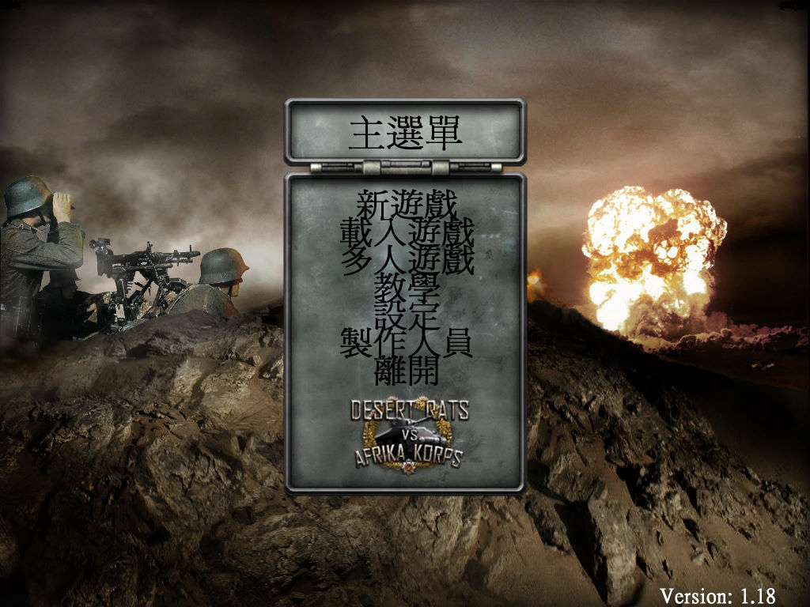
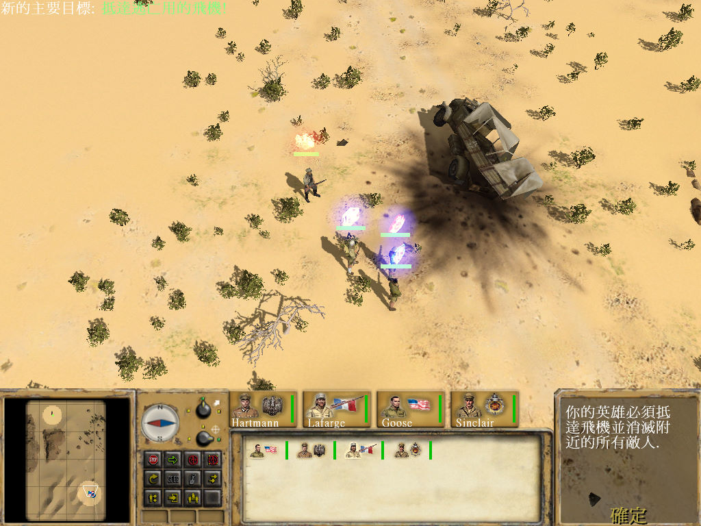

名稱：北非雄獅／北非雄師 (Desert Rats vs. Afrika Korps／Afrika Korps vs. Desert Rat，繁中／簡中版)
簡介：Digital Reality 2004年出品的即時戰術遊戲，由Monte Cristo代理發行，台灣則由
Atari代理發行中文版 [待補]。


保護：光碟StarForce 3.03
備註：VirtualBox無法正常顯示，虛擬機請使用VMware。
備註：中文版為1.18版。
檔案：nocd118_chs.rar = 簡中免光碟檔（繁中版無法使用）